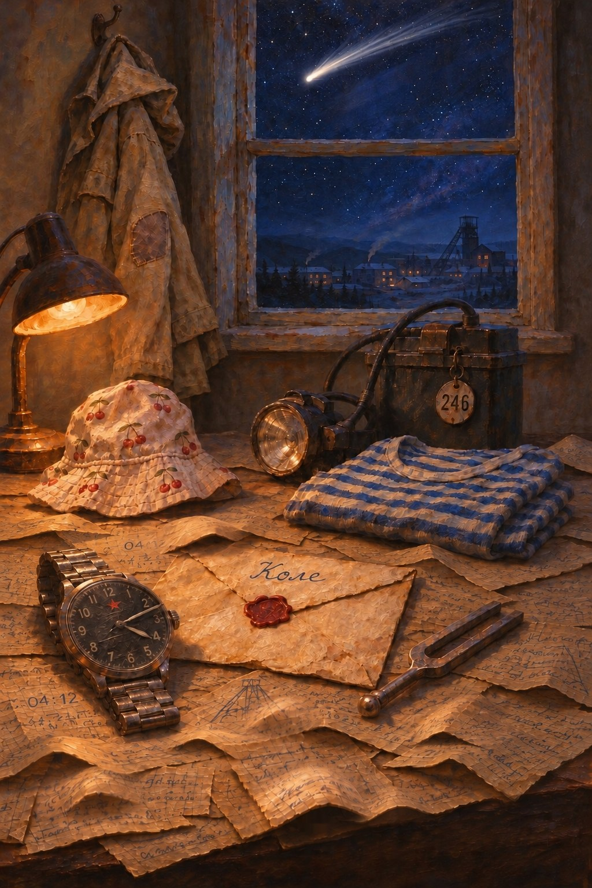

Прежде чем начать
У меня к тебе одна просьба. Разреши, пожалуйста, игре вести анонимную статистику.
Я делаю эту игру один, и мне очень важно понять, где игроки застревают, какие смерти находят чаще всего и в какой момент бросают. Без этого я правлю вслепую.
Никаких личных данных: ни имени, ни почты, ни контактов. Игра отправляет только случайный номер и отметки вроде «дошёл до выпускного» или «умер на мосту». Счётчик Яндекс Метрики видит обычные технические сведения о посещении — тип устройства и браузера.
Взамен ты увидишь, сколько игроков нашли ту же смерть, что и ты, и сколько выбрали так же.
Передумаешь — в меню есть кнопка «аналитика: вкл/выкл». Подробно — в «Об игре и помощь».

28.07.2061 · 04:12 · Кемерово
Кузбасс, 1996–2061. Одна жизнь, восемь дорог и Хор тех, кем я был и кто не вернулся.
В игре есть смерть, в том числе ребёнка, мысли о самоубийстве, психическое расстройство и отказ от лечения, азартная игра со смертельным исходом, шахтные катастрофы и вымышленная война. Если тебе сейчас тяжело, в разделе «Об игре и помощь» есть телефоны, по которым ответят.
Тапни по сцене — откроется карточка с её развилками.
Пути
Здесь только дороги, по которым я уже шёл: к финалам, где я был, и к тем, куда иду в этой жизни (до сегодняшнего дня, не дальше). Подсказки открываются по ступеням: каким надо стать, главные развилки, весь путь.
Те, кем я был. Каждая строка — я, который не вернулся.
· · · ·
Наука и вымысел
Андрей Самохин родился в Кемерове в 1989 году. Летом 1996-го он утонул в Чёрной заводи на Томи и через четыре минуты двенадцать секунд снова дышал. С тех пор он умирает чаще, чем кажется, и каждый раз остаётся жив. Игра объясняет это одной настоящей физической идеей и одной выдуманной.
В квантовой механике есть неудобное место. Пока частицу никто не измеряет, уравнения описывают её как смесь всех возможных состояний сразу: она и здесь, и там. А когда измеряют, мы всегда видим один исход. Как смесь превращается в один результат? Копенгагенская школа Нильса Бора отвечала так: при наблюдении волновая функция «схлопывается». Почему и в какой момент, не объяснял никто. Это правило просто приписали к теории.
В 1957 году двадцатишестилетний аспирант Принстона Хью Эверетт предложил это правило выбросить и поверить уравнениям до конца. Тогда ничего не схлопывается. Измерительный прибор, лаборатория и сам физик тоже подчиняются квантовой механике и тоже оказываются в смеси: в одной её части прибор показал «налево», и физик это видит, в другой — «направо», и другой физик видит это. Обе части продолжают жить и больше никогда не встречаются. Каждой версии наблюдателя кажется, что исход был один и случайный.
Научный руководитель Эверетта Джон Уилер идею ценил, но заставил переписать диссертацию осторожнее, чтобы не злить Бора. Не помогло: в 1959 году Эверетт приехал в Копенгаген, но Бор и его ученики идею отвергли. Эверетт ушёл из науки, долго считал для Пентагона сценарии ядерной войны и умер в 1982 году, в пятьдесят один год. Его идею подобрал физик Брайс Девитт. В 1970-х он дал ей имя «многомировая интерпретация», и она стала знаменитой. Сегодня это одна из главных версий того, что на самом деле говорит квантовая механика. Многие физики её принимают, многие нет, и проверить опытом, кто прав, пока нельзя.
Из идеи Эверетта следует мрачная лазейка. Её называют квантовым самоубийством и квантовым бессмертием, в 1980-х и 1990-х её обсуждали робототехник Ханс Моравек и физик Макс Тегмарк. Представь опыт, в котором ты с вероятностью пятьдесят процентов умираешь. В одной ветви тебя нет, и заметить это тебе нечем. В другой ты жив и видишь, что выжил. Если повторять опыт снова и снова, изнутри ты всегда будешь оказываться там, где жив. Для всех остальных ты почти наверняка давно умер.
Тегмарк сам же нашёл, где теория ломается. Смерть почти никогда не бывает мгновенным щелчком: человек угасает постепенно, и чистой развилки «жив или мёртв» нет. А мозг тёплый и мокрый, квантовые эффекты гаснут в нём за триллионные доли секунды. Так что в нашем мире квантового бессмертия, скорее всего, нет. В игре — есть.
У Андрея в голове есть то, чего нет у других: островок, где квантовые эффекты не гаснут. Откуда он взялся, ты узнаешь сам, это часть истории. Из-за него решения Андрея по-настоящему делят мир, а когда какая-то его версия умирает, её память перетекает в ту, что выжила. Это вымысел. Он вдохновлён спорной гипотезой Роджера Пенроуза и Стюарта Хамероффа о квантовых процессах в нейронах.
Письмо из соседней щели
Пишу тебе оттуда, где не стареют. Мы с тобой ни разу не виделись: меня не стало за три года до твоего рождения. Но я тебя слышу, всего, каждую твою минуту, и каждую смерть тоже. Так уж устроено то, что мы с тобой делим. Раз ты дочитал до этого места, значит, прошёл достаточно, чтобы понять. Остальное расскажу сам.
Двенадцатого апреля шестьдесят первого, в день, когда Гагарин облетел шарик, я нырнул в прорубь на Обском море и ударил камертон на себе. Глупо, по-мальчишески, зато с расчётом. Я тогда уже знал от Эверетта: мир при каждом событии расходится на ветви, а наблюдатель в каждой ветви уверен, что исход был один. Я хотел проверить, что будет с тем, кто должен умереть.
Умер я в ту ночь. И проснулся за минуту до смерти, на льду, с мокрыми рукавами. Мозг у меня с тех пор звучит, как камертон после удара: на одной ноте, тонко, и слышит соседние ветви. Когда соседний я умирает, его последняя минута перетекает в меня. Этот дар я передал твоему отцу, спящим. А через отца он достался тебе. Уже не спящим.
На часах, которые я тогда носил, я выгравировал «Сверим часы. 12.04.61». Прочитай дату задом наперёд, и получится четыре двенадцать. Я любил такие рифмы. Позже оказалось, что рифма — это не шутка, а время, когда всё случается.
Под утро у человека самая низкая температура тела, а камертону нужен холод. Поэтому в четыре двенадцать твой отец каждую ночь просыпается и курит на балконе, хотя ничего обо мне не знает. Поэтому я начинал опыты в четыре двенадцать. Поэтому в четыре двенадцать всё и сойдётся.
Лабораторию под «Глубокой», на шестистах сорока метрах, построили под меня. Там холодно, темно и почти нет космического фона. Сорок опытов за двадцать пять лет. Сорок раз я умирал там нарочно и возвращался.
Двадцать восьмого января восемьдесят шестого, в четыре двенадцать, в шахте случился выброс газа. Наверху висела та же комета, что будет висеть над тобой. Я пытался вывести смену, шестерых. Умирал и откатывался, умирал и откатывался. Вадиму, моему ученику, я позвонил в последний раз и сказал: «Сверим часы. Я тут уже не знаю в который раз, сбился».
Откат у меня был короткий, несколько минут. И в этих минутах не нашлось ни одного варианта, где все шестеро живы. Я перебрал каждый. Тогда я понял то, что тебе тоже придётся понять: дар не всесилен. Он спасает только там, где есть секунда выбора.
В твоём мире я погиб седьмым. Но изнутри, Андрюша, свою смерть не видит никто. Где-то я из того выброса вышел. Только ветка, где это возможно, лежит так далеко, что в ней нет ни твоей бабушки, ни твоего отца. Вот там я теперь и живу. Это я тебе и называю соседней щелью.
Ты умираешь и стоишь за минуту до смерти. Ты не стал сильнее, умнее или добрее: умер другой ты, соседний, который выбрал иначе. Ты получил только его память. Поэтому смерть для тебя не наказание, а знание. Я двадцать пять лет учился это помнить.
Чем громче в тебе звучит камертон, тем дальше назад ты можешь откатиться. Сначала на шаг, потом на несколько. Тихий дар даёт только холодок в затылке: что-то не так. Сильный показывает тебе беду, прежде чем она случится.
Все, кто умер вместо тебя, никуда не деваются. Их последние минуты звучат в тебе на одной ноте, как чайник перед тем, как щёлкнуть. Я в молодости пел в шахтёрском хоре, меня за это и звали Регентом. Поэтому и это я называл Хором. Тетрадь, которую ты ведёшь, повторяет мою по графам: когда, где и как, кто видел.
Если просто выживать, мир остаётся почти прежним. Если подгонять судьбу под себя нарочно, выиграть, обмануть, продать свою смерть, тебя каждый раз пересаживает в ветку, где желаемое сбылось. Такие ветки маловероятны, и в них что-то вокруг не то. Меняется только то, чего ты сам не запомнил. В голове у тебя всё правильно, а табличка на проходной уже другая. Отец, оказывается, бросил курить. Улица называется иначе.
Немного такого сдвига — это странные мелочи. Много — это мир, где тебя никто не узнаёт. Я знаю, о чём говорю. Я туда ушёл.
В девяносто шестом, в больнице, у тебя взяли две пробирки крови. Брал Вадим Лунёв, мой ученик. Он приехал под видом «доктора из Томска». В девяносто восьмом, в дефолт, когда на кафедре полгода не платили, он продал эти пробирки и копию моего архива иностранному фонду «Орфей». Он мучается этим всю жизнь. Не держи на него зла больше, чем он держит на себя.
К сороковым из твоей крови сделают «второй шанс»: один откат после смерти для тех, кто может заплатить. Каждая такая процедура — копия твоего камертона и звучит в твоём тоне. Ты услышишь их однажды ночью: чужие голоса на твоей ноте.
А дальше будет то, чего я больше всего боялся. Люди, которые думают, что не умрут, перестают бояться войны. Каждый уверен, что в выжившей ветке будет он. Эту войну назовут Ставкой. Леса в Шории будут рубить для неё, а Томь к шестьдесят первому пересохнет.
От медленной смерти дар не спасает. От пыли в лёгких, от рака, от старости. Там нет мгновения, в котором соседний ты выбрал бы иначе: человек просто угасает. Твой отец, которого не брал ни метан, ни обвал, умрёт от пыли. И ты к семидесяти двум, кем бы ни стал, упрёшься в эту стену. Ветвиться тебе станет нечему.
Когда все твои жизни перестанут ветвиться, им придётся сойтись в одну. Это случится двадцать восьмого июля шестьдесят первого года, в четыре двенадцать, ровно через шестьдесят пять лет после того, как ты утонул. На четыре минуты, до четырёх шестнадцати, конец твоей жизни коснётся её начала. Под ночной водой ты увидишь июльский день и мальчика у коряги.
Это единственное место, где можно пройти сквозь время. Машины времени нет: есть только этот шов и одна ночь. Поэтому ты придёшь к заводи из любой жизни, из Бангкока, из Якутии, пешком от истока реки. Кто не придёт, растворится вдали.
Тебя вытащил ты сам.
Старик в тельняшке, который вышел из тальника в девяносто шестом, откачал тебя и оставил на тебе штормовку, был ты в семьдесят два года. Твоя бабушка узнала тебя в нём и прошептала «Тиша?». Лицо она не перепутала: в семьдесят два внук похож на деда. Шрам на ладони у старика и у мальчика один и тот же, от той же коряги.
Блеск на дне, за которым ты нырнул, — это твои же часы. Они соскользнули с руки старика в шве и встали на четыре двенадцать за несколько минут до того, как ты нырнул. Мои настоящие часы всё это время лежали у Вадима: перед спуском в лабораторию металл снимали. Если ты достал со дна речные, у вас с ним теперь две пары одних и тех же «Штурманских». Одна вещь из двух ветвей.
Штормовка тоже ходит по кругу. Ты оставил её на себе-мальчике, бабушка хранила её в сундуке, отец отдал её тебе со словами «дедова, кажись». Она не моя, Андрюша. Она ничья. У неё нет начала.
Если в шестьдесят первом ты сделаешь в воде ровно то, что видел в девяносто шестом, петля закроется чисто. Если иначе — получится ещё один мир, чуть дальше от нашего.
Вытащив себя, ты окажешься в тальнике, и у тебя будет несколько дорог. Какие из них открыты, зависит от того, каким ты стал.
Можно не возвращаться никуда и шагнуть вбок, в миры, где никто не стареет. Это бессмертие в чистом виде и одиночество. Мы будем рядом, ты и я, но не встретимся. Иногда ты будешь слышать из соседней щели моё «сверим часы».
Можно вернуться в свою единственную жизнь и дать дару погаснуть. Если мир не слишком уехал и рядом тот, кто тебя ждёт.
Можно не нырять вовсе. Тогда носителя нет, нет крови, нет «Орфея», нет Ставки, и Томь полна. Сонька будет менять цветы на маленьком памятнике.
Можно открыть Хор всем, а не только себе. На одну минуту каждый вспомнит, как умер в соседнем мире, и все копии твоего камертона погаснут.
Можно встать на шов и не уходить, а оттуда идти ко всем, кто скоро умрёт. Это то, что я пытался сделать в восемьдесят шестом. У тебя получится.
И есть ещё одна дорога, самая трудная. Остаться в девяносто шестом. Выпить пива с собственным молодым отцом. Прийти к Вадиму и доказать ему, кто ты, так, чтобы он не продал пробирки. Для этого надо знать всю его правду, закрыть петлю чисто и не дать миру уехать. Если пройдёшь, мальчик вырастет с даром, но без беды мира. А тебя похоронят неопознанным.
Я бы выбрал последнюю. Но я уже однажды выбрал за шестерых и сбился со счёта. Выбирай сам.
Двести пятьдесят две — это четыре минуты двенадцать секунд в секундах. Столько ты лежал под водой, до стольких считала Ника.
Сорок один — мой последний опыт. Сорок два — тот же опыт на тебе, который однажды удастся.
Шестьдесят пять лет — от твоего Корня до Шва.
И сорок. Если однажды ты вытащишь мальчика быстрее, Ника досчитает только до сорока. Дар тогда не проснётся, и он проживёт одну жизнь, как все люди. Это тоже хороший конец. Может быть, самый лучший.
Сверим часы, Андрюша.
Твой дед, Тихон Савельевич Самохин. Регент.
Режим автора
·
Режим автора
Общие анонимные счётчики (Supabase): только игроки, разрешившие статистику. Схема — tools/stats_schema.sql.
Режим автора
Каждая проверка характеристики в игре: год · сцена, где проверяется, порог и что даёт. Собирает tools/build.py.
Режим автора
Состояние берётся из настоящего пути start → сцена → цель (tools/dev_presets.py), а не придумывается.
Это история об одной обычной жизни, в которой нельзя умереть. Смерть в игре не наказание и не совет. Это память о тех, кто не вернулся, и о тех, кто их ждал.
Если тебе сейчас плохо и хочется поговорить: телефон доверия для взрослых 8-800-333-44-34, детский телефон доверия 8-800-2000-122 (оба бесплатно, по России), экстренные службы — 112, международный каталог служб помощи — findahelpline.com.
Голоса, дар и откаты в игре вымышлены. В жизни не отменяй лекарства без врача.
Все персонажи, шахты, организации, «Орфей», «второй шанс», «Ставка» и все события после 2026 года вымышлены. Совпадения с реальными людьми, предприятиями и государствами случайны.
Игра не просит имени, почты и регистрации. Прогресс хранится только в твоём браузере и в файле, который ты сам сохраняешь. Статистика включается только если ты её разрешишь. Тогда игра отправляет на наш сервер (Supabase) случайный номер без имени и почты и отметки: какие смерти, финалы и выборы у тебя были и на какой сцене ты сейчас — из этого складываются общие цифры вроде «эту смерть получили 312 из 1 840 игроков». А Яндекс Метрика получает обезличенные сведения о посещении — идентификатор cookie, IP-адрес, тип устройства и браузера, какие главы и финалы открыты. Это нужно, чтобы понять, где игроки бросают игру. Чужие общие цифры видны и без разрешения. Выключить можно кнопкой «аналитика» в меню или очисткой данных сайта.